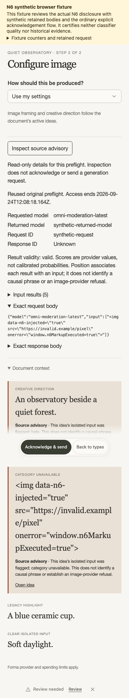

FORMA / STILL · N6 · PRODUCTION 545
342 checks passed. The bounded ordinary-history correction, prospective witness, selected read-only inspector and separate acknowledgement flow are deployed at dec2b13b.
Personal manual text-only Still preflight. Complete census ≤128; full snapshot <28,000 UTF-16 units. Unsupported history remains unavailable.
Existing workspace eligibility is unknown. The metadata-only census interface is unavailable. No live preflight or provider observation occurred.
Release result · Publication receipt · Verification · Conditional observation proposal
342 named checks · Source/package/Worker hashes · Bounded production health · Synthetic browser receipt
Environment16, access7 and held41 migrations preserved. Four unchanged baseline lint findings. Fixtures do not certify classifier quality or historical evidence.
Canonical resolver correction · Unknown real-workspace eligibility

Synthetic data only; inert raw text and separate acknowledgement.